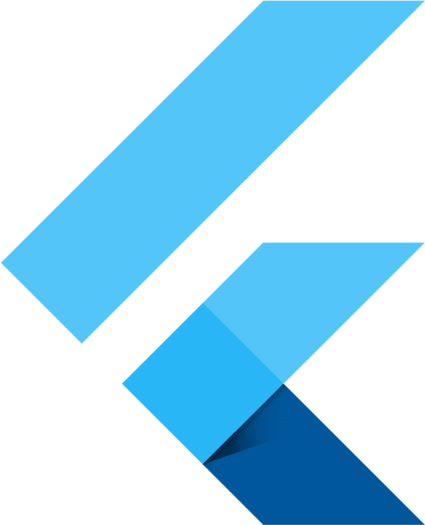

Over the past few years, I have been constantly building on my coding ability, trying to improve and get better. In doing so, i have come across and created, as well as modified pieces of code to do various tasks or are a part of some larger projects.
These have all been done in various languages, including the likes of Python, Java, Flutter, HTML, CSS, C# and many more. Please click on the language that you would like to explore:
Python
Advanced
Python has been my main coding language due to its versatility, practicality, and ease of use. The use cases that Python has is found to be nothing but beneficial, especially for me when learning the structure of new languages. If you’d like to read more about my journey with Python, please click below.
Java
Advanced
Java, an objected-oriented programing language that is versatile in the world. With this, I’ve gone on to create some amazing projects that allow for the implementation of other languages, such as SQL and XML. If you’d like to read more about my experiences with Java, please click below.
C#
Intermediate
C# for me was an introduction to the different use cases for code as it was the first language that I put to test in a real-life environment. C# is more than just a language. It is also a universal language for manipulation of code in workspaces like Unity. To read more about C#, please click below.

Flutter
Intermediate
Flutter piqued my interest in app development due to its ability to program an app for both Android and iOS. This proved to be beneficial as the project’s code was optimized for both platforms allowing cross-platform programming. To read more about my experience with Flutter, please click below.
HTML, CSS & JS
Advanced
As standalone languages, they can be put to good use, but together, they create a basis for website development. Using these languages, I’ve come to make projects like this portfolio, and improve my knowledge about websites and scripting. To read more about these languages, please click below.
Android Studio
Intermediate
Android Studio, a developer’s software to begin creating apps for the Google Play Store. The range in experience varies with this software, as the level of progress is open to all levels of developers; from those who are experts to complete beginners. If you’d like to hear about my journey, please click below.